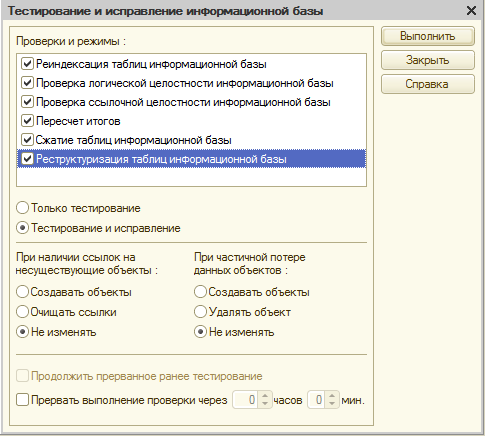
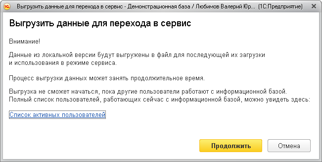
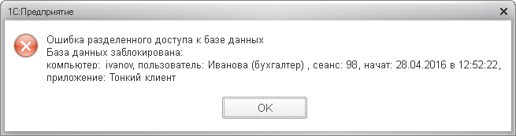
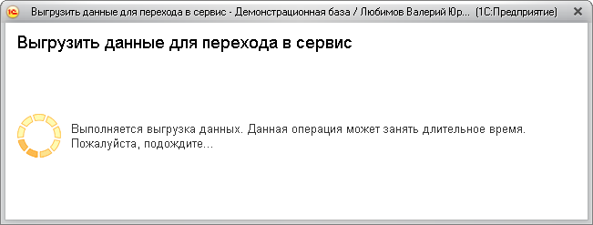
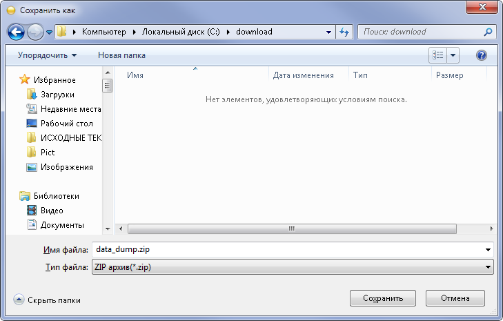
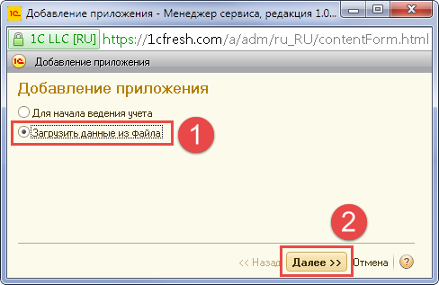
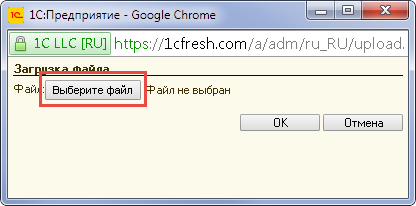
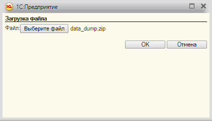
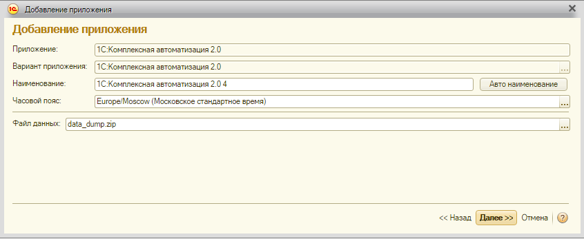
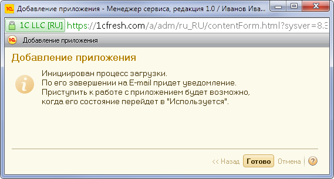

О сервисе 1cfresh.com
Возможности перехода в сервис.
Как загрузить данные из локальной версии приложения в сервис?
Создание приложения в сервисе с загрузкой данных из файла.
Возможности перехода в сервис:
1. Из Управление торговлей ред. 11 в облачную 1С:Комплексная автоматизация 2.0.
2. Из 1С:Комплексная автоматизация 2.0 в облачную 1С:Комплексная автоматизация 2.0.
Как загрузить данные из локальной версии приложения в сервис?
Для того чтобы загрузить данные из вашей локальной информационной базы в сервис, необходимо выгрузить ее данные в файл и затем создать в сервисе новое приложение, загрузив в него данные из этого файла.
Создание файла выгрузки
Вначале необходимо выгрузить данные из локальной версии приложения для перехода в сервис. Рассмотрим этот процесс на примере приложения Управление торговлей ред. 11.
Внимание! Для файловых баз предварительно необходимо запустить информационную базу в режиме 1С:Конфигуратор и выполнить Администрирование - Тестирование и исправление.

1. Открыть локальную информационную базу в режиме 1С:Предприятие, данные которой требуется перенести в сервис. Желательно убедиться, что в информационной базе не работают другие пользователи (в Управление торговлей ред. 11 список активных пользователей можно вывести командой меню НСИ и администрирование — Поддержка и обслуживание — Активные пользователи).
2. Выбрать команду Выгрузить данные в локальную версию:
3. Далее может быть выведено предупреждение о том, что выгрузка может занять продолжительное время. Следует нажать кнопку Продолжить.

4. Если в информационной базе работают другие пользователи, будет выведено сообщение об этом. Нужно попросить этих пользователей завершить работу и повторить попытку выгрузки данных для перехода в сервис.

5. Если в информационной базе не работают другие пользователи, начнется процесс выгрузки данных. При этом отображается окно, сообщающее о том, что выполняемое действие может быть длительным.

6. После того, как архив с данными приложения будет сформирован, будет выведен запрос Сохранить как.

В этом запросе следует:
1. Выбрать каталог для сохранения файла.
2. Задать имя сохраняемого файла (если предложенное по умолчанию имя не устраивает).
3. Нажать кнопку Сохранить.
Создание приложения в сервисе с загрузкой данных из файла
После создания файла выгрузки нужно создать в сервисе новое приложение, загрузив в него данные из этого файла.
Для этого пользователь, имеющий права владельца или администратора абонента, должен выполнить следующие действия.
1. Войти в менеджер сервиса, например, перейдя со страницы сайта Мои приложения по ссылке Личный кабинет.
2. Нажать кнопку Добавить над списком приложений абонента.
3. В выведенном окне Добавление приложения выбрать режим Загрузить данные из файла и нажать кнопку Далее >>

4. В выведенном окне Загрузка файла нажать кнопку Выберите файл.

5. В выведенном окне открытия файла выбрать файл выгрузки из локальной версии и нажать кнопку Открыть.
6. В окне Загрузка файла нажать кнопку OK.

7. Если версия конфигурации приложения, из которой был создан файл выгрузки, не может быть загружена в сервис, то менеджер сервиса сообщит об этом.
Если версия конфигурации приложения, из которой был создан файл выгрузки, — более старая, чем версия конфигурации этого приложения в сервисе, следует обновить локальную версию приложения до версии конфигурации, используемой в сервисе, или до версии, которая может быть загружена в сервис. Список таких версий можно вывести, нажав в выведенном окне надпись Полный список версий, которые могут быть загружены.
Если версия конфигурации приложения, из которой был создан файл выгрузки, — более новая, чем версия конфигурации этого приложения в сервисе, то загрузка данных из этого файла выгрузки в сервис невозможна. Следует дождаться, пока в сервисе не будет установлена та же версия конфигурации приложения, из которой был создан файл выгрузки, или более новая версия.
8.Если версия конфигурации приложения, из которой был создан файл выгрузки, может быть загружена в сервис, менеджер сервиса предложит указать наименование создаваемого приложения и часовой пояс.

Следует указать наименование приложения, выбрать часовой пояс и нажать кнопку Далее >>
9.Менеджер сервиса сообщит, что начался процесс добавления приложения и загрузки в него данных.

Когда процесс добавления приложения завершится:
- состояние приложения в списке приложений абонента изменится на Используется (при успешном завершении добавления приложения и загрузки данных) или Ошибка подготовки (если возникли ошибки).
- пользователю на его адрес электронной почты будет направлено письмо о завершении добавления приложения
Замечание. В случае возникновения ошибок в процессе подготовке приложения подробные сведения об этих ошибках можно получить, открыв в менеджере сервиса карточку приложения и нажав в ней надпись Журнал ошибок.